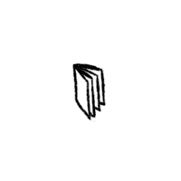
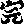
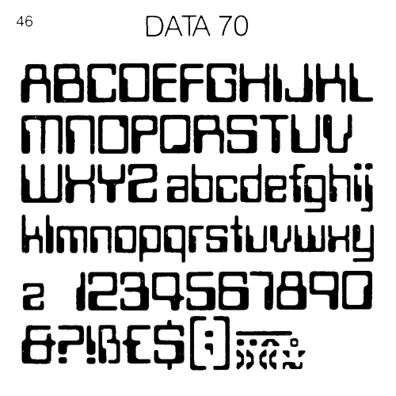
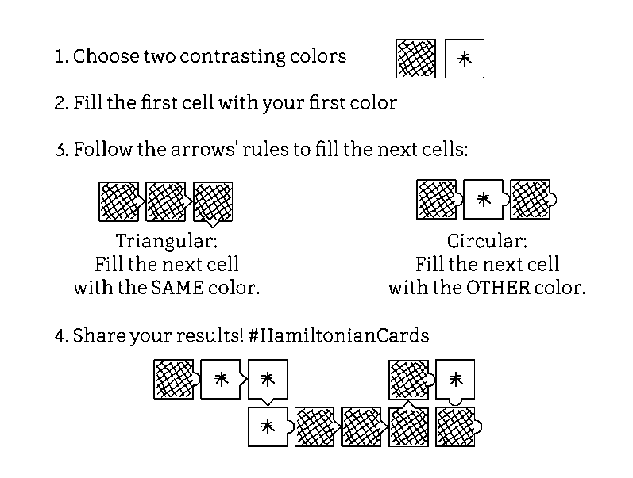
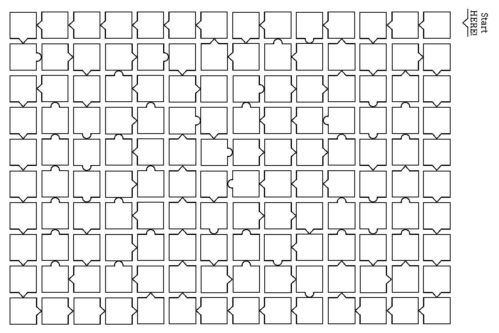

Imagine a computer harnessing the natural behavior of natural systems and utilizing their behaviors to solve equations.
Every one knew how laborious the usual method is of attaining to arts and sciences; whereas, by his contrivance, the most ignorant person, at a reasonable charge, and with a little bodily labour, might write books in philosophy, poetry, politics, laws, mathematics, and theology, without the least assistance from genius or study. ~
Color Computer
Non-electronic computers that work when you color them according to a simple set of rules. The booklet contains three series of computers: computers that compare, computers that count, and computers that play. From a technical standpoint they are all NOR-based logic circuits designed by using truth tables, karnaugh maps, and maxterm expansions.
From a social, political, and environmental perspective, these computers are an exploration of computation without electricity and semiconductors, an attempt to reinvent digital systems away from efficiency and productivity, and a hopeful prototype to expose the inner workings of computers.~

Nomograms
A nomogram is a graphical calculating device, a two-dimensional diagram designed to allow the approximate graphical computation of a function. Each variable is marked along a scale, and a line drawn through known scale values (or a straightedge placed across them) will cross the value of the unknown variable on its scale. See also, slide rules.

Visual Multiplication
The stick method of multiplication involves properly placing and crossing sticks. You simply lay out sticks consistent with the place values of the digits being multiplied. Then, you count the places where the sticks cross.
Example: 62 x 21 = 1302

Lattice Multiplication
Lattice multiplication is a method of multiplication that uses a lattice to multiply two multi-digit numbers.
Example: 64 x 17 = 1088

Genaille-Lucas Rods
The right side of the triangle covers the unit digits of a partial product added to a possible carry from the right. The left corner of the triangle is placed in height corresponding to the tens figure of the partial product. Multiplication is done by arranging the rods for the numbers needed, then following the arrows from right to left to read out the result.

Sliding Blocks
One of the intriguing properties of this strange, nondeterministic kind of logic is that signals can flow both forwards and backwards, and in fact don't even need to respect normal notions of input and output.
Consider the AND mini-puzzle. Suppose the goal is to slide the upper protruding block into the box? The answer is that first the left block and the bottom block must both be slid out one unit. This will let the internal blocks slide to free up space for the upper block to slide in. So, this puzzle does indeed have an AND-like property: both the left and the bottom blocks must slide out before the top one may slide in. The light gray blocks are spacers, which don't ever need to move. ~

Paper Microfluidics
Fluidics is the construction of computing systems using fluids. Paper microfluidics don't require external pumps or power sources, they can be small, portable, disposable, easy to distribute and operate, low-cost, technically simple to make, and they only need tiny amounts of sample fluid. A minimal setup can be as simple as heating the lines drawn by wax crayon on extra absorbent paper, like cellulose paper and using droplets with food colouring.

- Nomographie
- Deadreckonings
- Paper Phone
- Paper Camera
- Computer Science Unplugged
- Cut & Fold Templates
- Human-Computers
- Rustic Computing
- Cardtalk Player
- Alligator Calculus
- Sadako
- Sliding Blocks Computers
- Wang Tiles
The design for a simple portable computer that only requires a pencil and a sheet of paper.
The computer consists of a sheet of paper that contains both the program as well as the state of the program during each step of the evaluation. See also paper games.
- A pen, or pencil
- A sheet of paper
Paper data storage refers to the use of paper as a data storage device.
This includes writing, illustrating, and the use of data that can be interpreted by a machine or is the result of the functioning of a machine.
Punched Cards
Punched cards would encode alphanumeric characters vertically, the IBM 12-row/80-column punched card format came to dominate the industry. It encoded 960 bits of memory. Find an example here.
Hex Codes
You can get 3.5 kilobytes per A4 page (font size 12pt, font Inconsolata) and OCR it with gocr at 400DPI.
| 24x24 ICN Sprite | |
|---|---|
|  |
0003 6331 397b 77f8 c0f0 f7ff fff0 8003 1c7e feff 0f07 078e f860 0c07 0300 301f 071f 7cf8 f007 7fff dcc0 c000 70f8 f8b0 0f07 4143 677f 7f3e ffe3 87cf cfcf 8703 84c4 8406 0efe fcf8 |
MICR
E-13B is a magnetic ink character recognition(MICR) code of 14 character, comprising the 10 decimal digits. Westminster is a printing and display typeface inspired by the machine-readable numbers printed on cheques. It's akin to encoding QR code in typography.
Hamiltonian Cards
The Hamiltonian Cards are generative coloring puzzles where on follows the instructions to reveal their messages. They consist in a grid of squares, each with an arrow of either two types, pointing to another square in a type of sequence called Hamiltonian Path.
Following the path of arrows and coloring each cell that you encounter you will color the whole grid and reveal the hidden picture.
